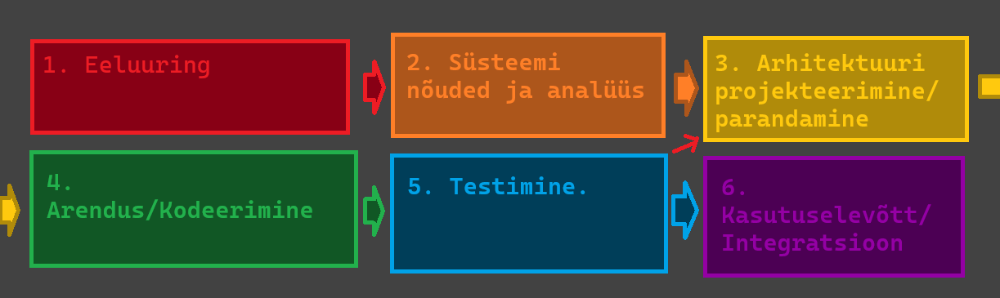

Iteratiivne arendusmudel on SDLC meetod, mille eesmärk on lahendada probleem mille tekitab
tavaline jäikmudel. Jäikmudeli (nagu Waterfall) rakendamisel ei saa muudatusi teha arenduse
teostamise ajal. Iteratiivsed arendusmudelid aga lubavad seda teha iga iteratsiooni vahel.
Iteratiivne arendusmudel on ise ka tegelikult kombinatsioon Iteratiivsest endast ja
Inkrementaalmudelist, seda seetõttu, et ühe iteratsiooni ajal saab kas olemasolevat struktuuri
muuta (uus iteratsioon vanast) või lisada sellele midagi juurde (uus inkrement vanale).
Iteratiivne arendusmudel sobib näiteks juhul kui klient või lõppkasutaja vajab mõne funktsiooni
teistsugust toimimist või midagi uut juurde.
Näide: On olemas MMORPG kus mängija saab tappa koletisi, aga mängijad soovivad ka teisi
mängijaid tappa, Arendusmeeskond võtab kuulda, ning arendab juurde meetodid ja funktsioonid
koos muude multimeediavaradega selle mängijale võimalikuks muutmiseks.
Tulemuseks on see, et avatakse 1v1 areen
- Arendusmudel sobib ka sellistel juhtudel kus tingimused arenduseks on üheselt määratud
ning kõigile meeskonnaliikmetele selged ja üheselt arusaadavad.
- Iteratiivne arendusmudel sobib ka olukordades, kus on turu ja/või konkurentsisurve mingis
tootekategoorias. Võib olla kas siis uus arendus lastakse välja osalise funktsionaalsusega
või arendatakse vanale olemasolevale projektile uus osa juurde, samuti osalise funktsionaalsusega
- Saab kasutada arendusmudelit ka siis, kui projekt rakendab uudset metoodikat või tehnoloogiat
mingisuguse lahenduse arendamiseks, ning mille käigus meeskonnaliikmed paralleelselt ka õpivad
uut tööriista/metoodikat tundma.
- Või siis saab kasutada kui projekti eesmärk ajas muutub. Projekt algab ühe eesmärgiga, kuid
kasutajatestimine näitab hoopis mõne kõrvalise funktsionaalsuse kasulikumat olekut või kasutatakse
toodet eeldatust täielikult teistmoodi. Sellisel juhul saab arendusmeeskond suunata projekti ümber
kasutajate poolt ettenäidatud käitlemise suunas (arendus sihitakse sellele kuidas kasutaja kasutab
mitte kuidas arendajad seda ette nägid).
Teostatakse süsteemi tasuvusuuring, et näha kas ja kuidas arendustöö ennast ära tasub. Ning selle
põhjal otsustakse kuidas arendustöö läbi viiakse ja kas üldse läbi viiakse.
Kaardistatakse ära mida klient tahab, mida lõppkasutaja tahab, mida selle programmiga üldse teha
saab. Mis on vaja selle süsteemi toimimiseks (infrastruktuur, riistvara, serverid, teised äpid jne.)
Iteratsiooni alguses kogutakse ka tagasisidet kliendilt ja kasutajatelt ning täpsustatakse ära uued
nõuded kas siis uue osa lisamiseks või vana osa uueks iteratsiooniks.
Selles etapis töödatakse välja lahendus mis on vastavuses nõuetega, või ei ole, siis seda parandatakse
et ta nõuetega vastavusse viia. Et arhitektuur oleks kooskõlas nõuetest tulenevate
tingimustega.
Toimub arendustöö programmeerimise näel et täita nõuded mis süsteemil vaja.
Selles etapis kontrollitakse et eelnevas etapis arendatud töö toimiks nii, nagu seda nõuetes
sätestatud on.
See etapp toimub siis, kui testimine on tõestanud et programm töötab ning programm suudab käsitleda
ka mingis ulatuses ootamatusi. Kui programm ei ole valmis muu süsteemiga integreerimiseks,
korratakse eelmisi etappe niikaua kuni ta on. Kui programm on valmis siis toimub integratsioon
muu vajaliku süsteemiga. Näiteks: Linuxi distro versioon on valmis ja kasutajale pakutakse
versiooniuuendust. Installatsioon integreerib uue distro versiooni sinu raudvaraga
| Tugevus | Puudujäägid |
| Paindlikkus mis tagab kiired tulemused. Iteratiivses arenduses saab jaotada kliendi poolt tulnud probleemi või nõude mitmeks väiksemaks osaks, ning need omakorda üksikuteks funktsioonideks. See aitab valmis saada mingisuguse versiooni tootest üsna kiiresti. Olenevalt projektist isegi tundidega või mõne päevaga. Selline tükeldamine lubab arendusmeeskonnal endale parajad probleemid ette seada. | Projekti edasises arendusjärgus või hlises etapis võivad muudatused (olenevalt selle suurusest ja kontekstist) muutuda kulukaks. Näiteks leitakse üles struktuuris fundamentaalne viga, ning see algne arendustöö on nüüd mitme erineva teenuse või funktsioonikihi all. Muudatus siin tähendab muudatusi ka kõikides teistes süsteemides mis sellele tuginevad. |
| Lihtne omaksvõtt ning kliendi rahulolu. Tänu pidevatele uuendustele, on iteratiivne arendus arendajaile mugav lubades võtta poolepealt juurde uusi nõudeid või soove kliendilt, tagades kliendile sobivama toote. Iteratiivses mudelis leitakse ka vead suhteliselt ruttu üles, ning nende parandamine tõhustab toote rakendamist ja omaksvõttu ka kasutajaile. Vigade parandus ise toimib ka jooksvalt. | Kõrgem surve, et saada projektile kasutajaid, kes peavad siis toote kohta arendajaile tagasisidet andma. Kosemudelis saab kasutaja toote kätte alles arenduse lõpus, pärast mida muudatusi sisse viia ei ole võimalik. Kuna iteratiivses ei ole 100% nõudeid arendustöö alguses määratud, saadakse täiendavaid nõudeid lõppkasutajatelt arenduse ajal. |
| Lihtne versioonihaldus. Iteratiivses arenduses on põhimõtteliselt iga uus väljalase uus versioon mis aitab ära hoida katkise süsteemi leviku. Näiteks: Lastakse välja FPS mängus patch mis rikub ära kasutaja hüppamisfüüsika (on lag) Arendusmeeskond saab reageerida sellele kiirelt, keerates live väljalaske vanale versioonile, parandab vead, ning siis laseb juba parandatud patchi uuesti välja. | Eripäradade ja omaduste kasutajani jõudmine. Tihtipeale peavad kasutajad uusi funktsioone arendusmeeskonnalt ise küsima, või ootama kuni arendusjärk selle funktsioonini mis neil vaja on, jõuab. Uute versioonide puhul peavad kasutajad harjuma ka uute kasutajaliideste eripäradega, või koguni täielikult uue kasutaja kasutajaliidesega. Uuega harjumine kasutajaile võtab aega ja tahtmist. |
| Sobib organisatsioonidele mis rakendavad erinevaid agiilseid arendus metoodika praktikaid. Ta toimib väga hästi väiksemates agiilsetes rühmades kus vastutus on jaotatav meeskonnaliikmete vahel, ning mis võimaldab iteratsiooni läbida suhteliselt kergelt ning kiirelt. (Mugav arendajetele) | -- |
